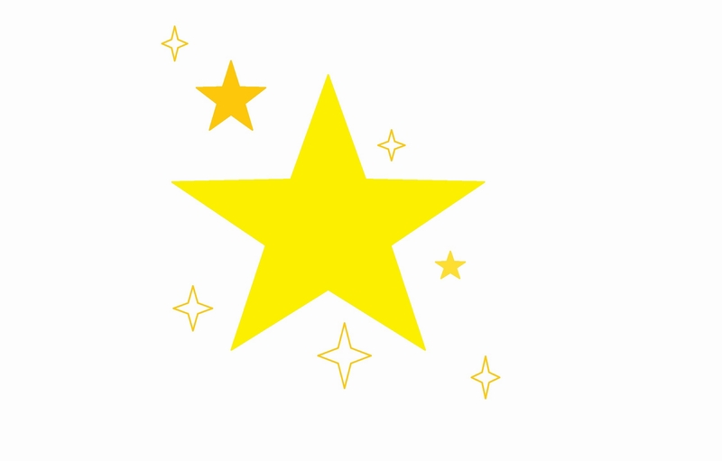

GP-Allstars
GP-Allstars
Hverdagens små stjerner

Hvad er stjerner? Stjerner er ikke kun noget, der svæver over nattehimlen og oplyser jorden, når det en sjælden gang imellem er skyfrit.
Stjerner kan også være en lille hjælpende hånd i hverdagen, en venlig sjæl der frivilligt går i gang med at hjælpe dig med at samle de varer op, som du lige har tabt i dit supermarked. Det er sådan nogle ting, der virkelig kan lyse hverdagen op som stjernerne på nattehimlen.
Selv et lille godmorgen fra naboen, når du trofast er ved at kæmpe dig gennem kulden for at komme på arbejde eller i skole, kan virkelig varme dig, når vinterkulden raser. Der skal ikke så meget til.
Prøv selv at være opmærksom på, når du møder en nabo eller en genbo, at sige ”hej” eller ”godmorgen,” også selvom du ikke snakker med dem i hverdagen. De vil stadigvæk blive glade for din påskønnelse. Det kan være, at de, næste gang du møder dem, siger godmorgen til dig. Det smitter!
Endnu en lille hverdagsstjerne kan være, at du smiler til kassedamen i Netto, at du siger et rosende ord til kollegaen eller kammeraten. Det er sådanne små påskønnelser, der virkelig kan gøre din hverdag mere overskuelig og oplyst.